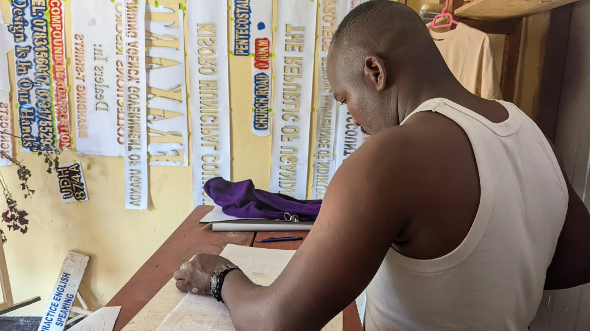
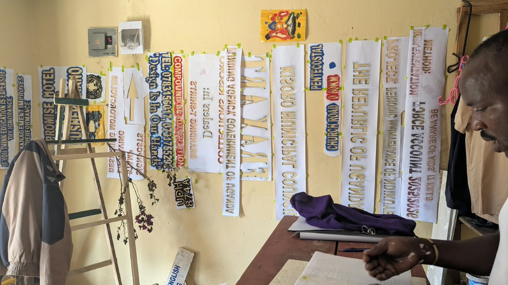
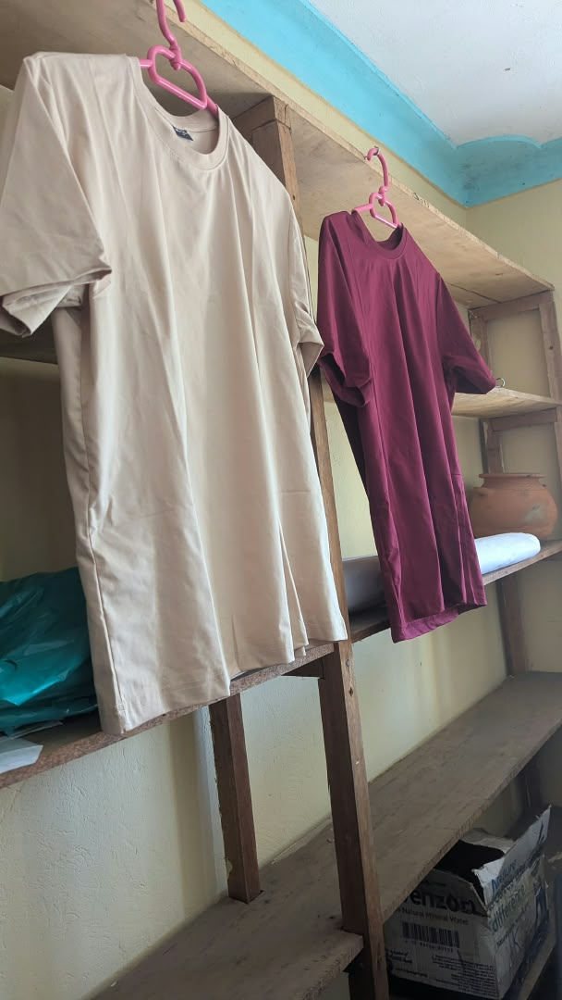

Branding & Signage
Make a space, product or campaign recognisable with bold visual direction and hand-finished detail.

KISORO · UGANDA
A creative space for art, design, craftsmanship and visual expression.
ABOUT FRAX ART
FRAX ART is a creative art and design space based in Kisoro, Uganda.
We bring ideas to life through visual art, branding, signage, engraving, motorcycle design and creative environmental work.
Our goal is simple: turn imagination into something people can see, feel and remember.
Explore what we do →02 · THE COLLECTION
Explore creative directions from the FRAX ART studio. Each image can later be replaced with your own finished commissions.
03 · WHAT WE DO
Make a space, product or campaign recognisable with bold visual direction and hand-finished detail.
Turn a wall, canvas or idea into a visual story with expressive colour, texture and local character.
Create memorable objects and gifts with carefully drawn marks, carved surfaces and lasting detail.
Bring compounds, studios, hospitality spaces and community places to life through art-led design.

04 · FEATURED PROJECT
Showcase your strongest commission here. Tell visitors what the client needed, how FRAX ART approached the idea, and what was created.
Commission a Project ↗05 · OUR PROCESS
Understand the idea, purpose and audience.
Explore concepts, references and creative directions.
Shape the strongest idea into a clear visual concept.
Turn the concept into a physical or digital result.
Refine the final work and prepare it for use.
06 · CREATIVE COMMUNITY
Use this space for future art workshops, youth creativity sessions, drawing, painting and other community activities.
Ask About Workshops ↗Replace this content with confirmed programs and dates.
Celebrate local ideas, makers and visual expression.

07 · OUR HOME
FRAX ART is proudly rooted in Kisoro. Replace this copy with authentic photography of the studio, artists, local environment and finished work as your archive grows.
08 · CLIENT VOICES
Invite clients to share what the experience felt like. Ratings are ready for future use and reviews can be connected to a database later.
Read or leave a review ★09 · START A PROJECT
Let's turn your idea into something visual.
10 · VISIT
Replace this section with the exact studio address, opening hours and map embed when available.